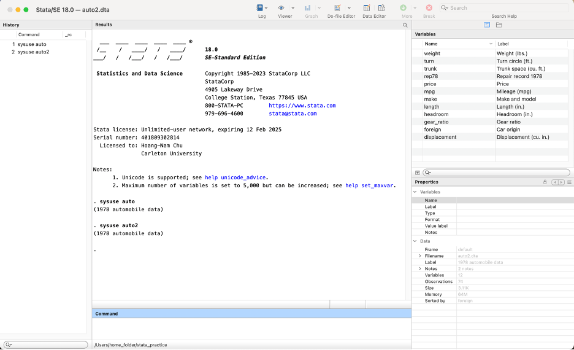
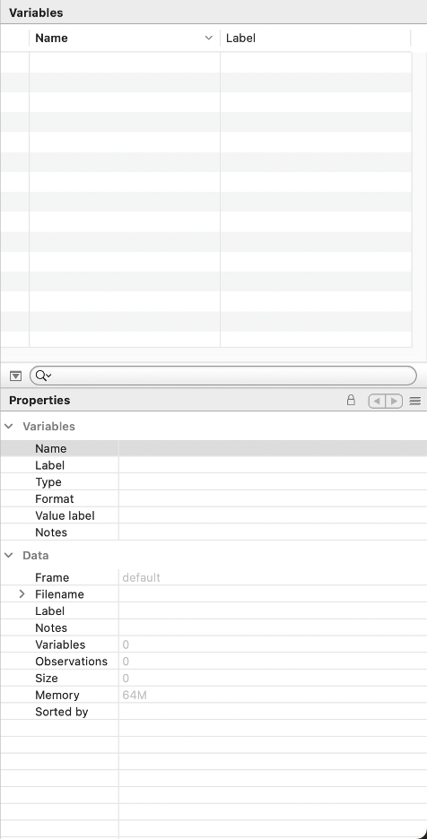
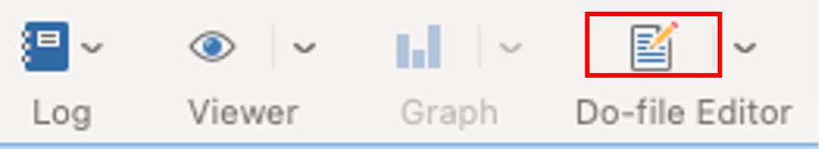
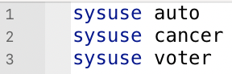
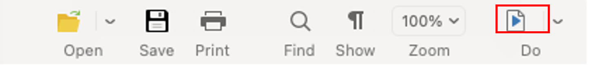
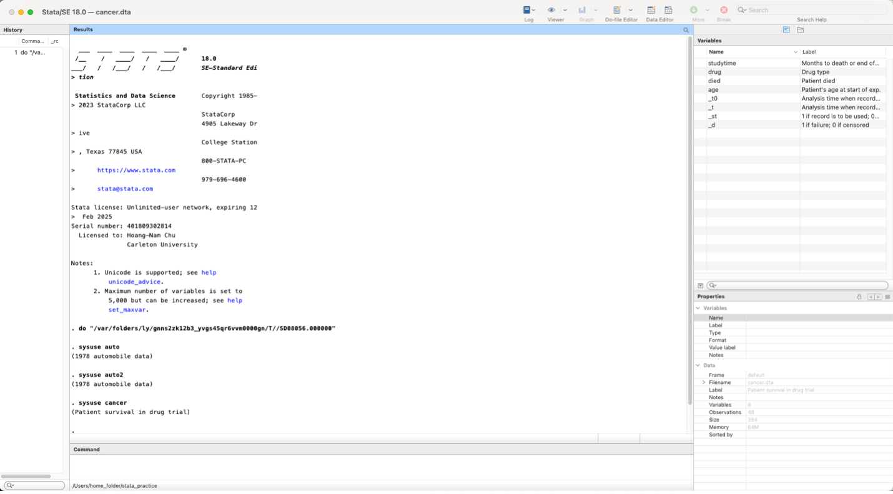
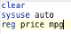
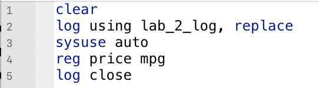

Now that you’ve explored STATA’s interface, we will now be exploring STATA’s functions that allow you to preserve your work.
After this lab, you should be able to:
In the last lab, we explored STATA’s graphical user interface. In order to remind you of what we last did,
-> type in sysuse auto into the command line
interface (CMI).
This tells STATA to load in the auto dataset that comes
preloaded with STATA. Of course, there are other datasets that come
preloaded with STATA, which you can find here.
If you visit the website, you can see that there exists another
example dataset called auto2. Let’s try to load it in as
well.
-> type sysuse auto2 in the CMI.

Notice that there are two commands in both the history and results windows.
-> Open up the browse mode of the data editor.
If you pay close attention to the title, you will see that you are
looking at the data for auto2. What happened to the
auto dataset? Well, it got overwritten.
In STATA, you can only load one dataset at a time. If you are used to other programming languages, like R, this will be something you have to get used to.
-> close the window and go back to the initial STATA screen.
What if we wanted to “clear” STATA’s memory so that we can load in another dataset?
-> type clear in the CMI.
 As its name indicates, this command has cleared out STATA’s memory of the previous dataset. Let’s try to import other example datasets. After loading each dataset, explore it a bit before loading another one in.
-> type sysuse cancer in the CMI.
-> type
sysuse voter in the CMI.
-> type
sysuse census in the CMI.
Now, clear your memory using the clear command.
-> type clear in the CMI.
As you can see, our history window is beginning to get filled with commands. You can probably tell that the more commands that you enter, the harder it will be to find certain commands, or even retrace our steps.
TIP: To make a previous command appear in your command-line interface, press (mac: fn+up, windows: pgup)
This is where do files come in handy. Do files are like a paper trail that lets us externalize the code that we write in order to accomplish a certain task. You can access the do-file editor by clicking the  Do-file Editor icon in the toolbar.
The Do-file Editor looks like a text editor. We can start populating it with some of our previous commands.
-> type sysuse auto, sysuse auto2 and
sysuse cancer all on a new line.

To run your commands, you can use the play button located at the top right of the editor.
 Pressing the play button will run all the commands from the top of the file to the bottom, line by line. You can also choose to run each line separately by choosing it from the list of options in the drop down menu next to the play button.
Tip: You can use (mac/windows: ctrl+d) to run the do-file from top to bottom, but also (mac/windows: shift+ctrl+d) to run each command line-by-line.
-> Go back to your results screen.
 You should see something like this: it executed your code! Now you don’t have to remember every single that you type into the command-line. Notice also that there’s a new command in the history window. The neat thing about STATA is that you can use its graphical user interface and the associated STATA code will pop up in the results window. This is a great way of learning STATA code as a beginner.
-> Go back to the Do Editor and add clear to the top
of the file.
This is good practice because if you run the code from top to bottom, it will clear any pre-existing datasets in your memory.
-> erase sysuse auto2 and erase
sysuse cancer but leave sysuse auto. Run your
do-file. -> Type browse in the CMI.
This allows you to access the data-editor without using your mouse. Now we’re going to run a linear regression on the price and mpg variables. If you are not familiar with linear regressions, you will see it more during the second half of the course.
-> type reg price mpg on a new line after
sysuse auto. Rerun the do-file.

This command tells STATA to run a linear regression on the
mpg variable. All you need to know is that this is one of
many commands that STATA can accomplish.On your results window you
should see a table with a bunch of numbers. This tells us some very
important information. Let’s say you wanted to preserve this results
page, including the table in a file, how would you do this? This is
where Log files come in handy.
If do-files are like the recipes, log files are like the recipe book that the recipes are in. Log files keep track of everything that you see in the results screen. This could come in handy if you want to show your work to someone or check your results at a later date.
-> type log using lab_2_log after clear
in your do-file.
This will intitiate a log file that will capture all the results
thereafter called lab_2_log. It’s also good practice to
stop logging at the end of your file.
-> type log close after
reg price mpg

This will stop logging and close the file. For now, you can save your do-file in whatever folder you would like. We will talk about saving files and file-oaths in more detail later.